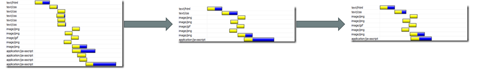

Content
- Make Fewer HTTP Requests
- Reduce DNS Lookups
- Avoid Redirects
- Make Ajax Cacheable
- Postload Components
- Preload Components
- Reduce the Number of DOM Elements
- Split Components Across Domains
- Minimize Number of iframes
- Avoid 404s
80% of the end-user response time is spent on the front-end. Most of this time is tied up in downloading all the components in the page: images, stylesheets, scripts, Flash, etc.
Reducing the number of components in turn reduces the number of HTTP requests required to render the page. This is the key to faster pages.
One way to reduce the number of components in the page is to simplify the page's design.
Combined files are a way to reduce the number of HTTP requests by combining all scripts into a single script, and similarly combining all CSS into a single stylesheet.
CSS Sprites are the preferred method for reducing the number of image requests. Combine your background images into a single image and use the CSS background-image and background-position properties to display the desired image segment.
.app-icon-read {
background-position: 0 0;
}
.app-icon {
background: url("/pics/app/app_icons_50_5.jpg") no-repeat scroll 0 0 transparent;
border-radius: 10px 10px 10px 10px;
box-shadow: 1px 1px 2px #999999;
display: inline-block;
height: 50px;
width: 50px;
}
Image maps combine multiple images into a single image. Image maps only work if the images are contiguous in the page, such as a navigation bar.
Defining the coordinates of image maps can be tedious and error prone. Using image maps for navigation is not accessible too, so it's not recommended.
http://en.wikipedia.org/wiki/Image_mapInline images use the data: URL scheme to embed the image data in the actual page. This can increase the size of your HTML document. Combining inline images into your (cached) stylesheets is a way to reduce HTTP requests and avoid increasing the size of your pages.
data:[<mime type>][;charset=<charset>][;base64],<encoded data><img width="16" height="16" alt="star" src="" />To learn more:
Reducing the number of HTTP requests in your page is the place to start. This is the most important guideline for improving performance for first time visitors. 40-60% of daily visitors to your site come in with an empty cache. Making your page fast for these first time visitors is key to a better user experience.
The Domain Name System (DNS) maps hostnames to IP addresses. DNS has a cost. It typically takes 20-120 milliseconds for DNS to lookup the IP address for a given hostname. The browser can't download anything from this hostname until the DNS lookup is completed.
DNS lookups are cached for better performance.
Reducing the number of unique hostnames reduces the number of DNS lookups.
The guideline is to split these components across at least two but no more than four hostnames. This results in a good compromise between reducing DNS lookups and allowing a high degree of parallel downloads.
Redirects are accomplished using the 301 and 302 status codes.
HTTP/1.1 301 Moved Permanently
Location: http://example.com/newuri
Content-Type: text/htmlThe main thing to remember is that redirects slow down the user experience.
Inserting a redirect between the user and the HTML document delays everything in the page since nothing in the page can be rendered and no components can start being downloaded until the HTML document has arrived.
Alias and URL Rewrite if the two code paths are hosted on the same server. Alias or URL Rewrite.Using Ajax is no guarantee that the user won't be twiddling his thumbs waiting for those asynchronous JavaScript and XML responses to return. It's important to remember that "asynchronous" does not imply "instantaneous".
The most important way to improve the performance of Ajax is to make the responses cacheable, as discussed in Add an Expires or a Cache-Control Header. Some of the other rules also apply to Ajax:
Even though your Ajax responses are created dynamically, and might only be applicable to a single user, they can still be cached. Doing so will make your apps faster.
You can take a closer look at your page and ask yourself: "What's absolutely required in order to render the page initially?". The rest of the content and components can wait.
JavaScript is an ideal candidate for splitting before and after the onload event.
The idea of progressive enhancement tells us that JavaScript, when supported, can improve the user experience but you have to make sure the page works even without JavaScript. So after you've made sure the page works fine, you can enhance it with some post-loaded scripts that give you more bells and whistles such as drag and drop and animations.
Preload may look like the opposite of post-load, but it actually has a different goal. By preloading components you can take advantage of the time the browser is idle and request components (like images, styles and scripts) you'll need in the future.
A complex page means more bytes to download and it also means slower DOM access in JavaScript. It makes a difference if you loop through 500 or 5000 DOM elements on the page when you want to add an event handler for example.
The number of DOM elements is easy to test, just type in Firebug's console:
document.getElementsByTagName('*').length
Splitting components allows you to maximize parallel downloads. Make sure you're using not more than 2-4 domains because of the DNS lookup penalty.
For example, you can host your HTML and dynamic content on www.example.org and split static components between static1.example.org and static2.example.org
Iframes allow an HTML document to be inserted in the parent document. It's important to understand how iframes work so they can be used effectively.
HTTP requests are expensive so making an HTTP request and getting a useless response (i.e. 404 Not Found) is totally unnecessary and will slow down the user experience without any benefit.

Some sites have helpful 404s "Did you mean X?", which is great for the user experience but also wastes server resources (like database, etc).
Check out CSS Tricks' 404 Page
Particularly bad is when the link to an external JavaScript is wrong and the result is a 404. First, this download will block parallel downloads. Next the browser may try to parse the 404 response body as if it were JavaScript code, trying to find something usable in it.
A content delivery network (CDN) is a collection of web servers distributed across multiple locations to deliver content more efficiently to users. The server selected for delivering content to a specific user is typically based on a measure of network proximity.
Some large Internet companies own their own CDN, but it's cost-effective to use a CDN service provider, such as Microsoft Azure CDN, Akamai Technologies, EdgeCast, or level3.
Expires headerCache-Control header to help the browser with conditional requestsCache-Control public, max-age=31536000
Content-Length 9760
Content-Type image/png
Date Thu, 18 Dec 2014 23:17:07 GMT
Expires Fri, 18 Dec 2015 23:17:07 GMT
Last-Modified Mon, 02 Apr 2012 00:13:23 GMT
Server sffe
X-Content-Type-Options nosniff
X-Firefox-Spdy 3.1
X-XSS-Protection 1; mode=blockIf you use a far future Expires header you have to change the component's filename whenever the component changes. We often make this step part of the build process: a version number is embedded in the component's filename, for example, script_2.0.6.js.
Starting with HTTP/1.1, web clients indicate support for compression with the Accept-Encoding header in the HTTP request.
Accept-Encoding: gzip, deflateIf the web server sees this header in the request, it may compress the response using one of the methods listed by the client.
Content-Encoding: gzipHTTP/1.1 200 OK
Last-Modified: Tue, 12 Dec 2006 03:03:59 GMT
ETag: "10c24bc-4ab-457e1c1f"
Content-Length: 12195Later, if the browser has to validate a component, it uses the If-None-Match header to pass the ETag back to the origin server. If the ETags match, a 304 status code is returned reducing the response by 12195 bytes for this example.
GET /i/yahoo.gif HTTP/1.1
Host: us.yimg.com
If-Modified-Since: Tue, 12 Dec 2006 03:03:59 GMT
If-None-Match: "10c24bc-4ab-457e1c1f"
HTTP/1.1 304 Not ModifiedWhen users request a page, it can take anywhere from 200 to 500ms for the backend server to stitch together the HTML page. During this time, the browser is idle as it waits for the data to arrive. In PHP you have the function flush(). It allows you to send your partially ready HTML response to the browser so that the browser can start fetching components while your backend is busy with the rest of the HTML page.
A good place to consider flushing is right after the HEAD because the HTML for the head is usually easier to produce and it allows you to include any CSS and JavaScript files for the browser to start fetching in parallel while the backend is still processing.
... <!-- css, js -->
</head>
<?php flush(); ?>
<body>
... <!-- content -->
When using XMLHttpRequest, POST is implemented in the browsers as a two-step process: sending the headers first, then sending data. So it's best to use GET, which only takes one TCP packet to send (unless you have a lot of cookies). The maximum URL length in IE is 2K, so if you send more than 2K data you might not be able to use GET.
An interesting side affect is that POST without actually posting any data behaves like GET. Based on the HTTP specs, GET is meant for retrieving information, so it makes sense (semantically) to use GET when you're only requesting data, as opposed to sending data to be stored server-side.
http://www.w3schools.com/tags/ref_httpmethods.aspImage with empty string src attribute occurs more than one will expect. It appears in two form: Both forms cause the same effect: browser makes another request to your server.
HTTP cookies are used for a variety of reasons such as authentication and personalization. Information about cookies is exchanged in the HTTP headers between web servers and browsers. It's important to keep the size of cookies as low as possible to minimize the impact on the user's response time.

When the browser makes a request for a static image and sends cookies together with the request, the server doesn't have any use for those cookies. So they only create network traffic for no good reason. You should make sure static components are requested with cookie-free requests. Create a subdomain and host all your static components there.
www.example.org, you can host your static components on static.example.org. However, if you've already set cookies on the top-level domain
example.org as opposed to www.example.org, then all the requests to
static.example.org will include those cookies. In this case, you can buy a whole new domain, host your static components there, and keep this domain cookie-free. Yahoo! uses yimg.com, YouTube uses ytimg.com, Amazon uses images-amazon.com and so on.
Moving stylesheets to the document HEAD makes pages appear to be loading faster. This is because putting stylesheets in the HEAD allows the page to render progressively.
The problem with putting stylesheets near the bottom of the document is that it prohibits progressive rendering in many browsers, including Internet Explorer. These browsers block rendering to avoid having to redraw elements of the page if their styles change. The user is stuck viewing a blank white page.

The HTML specification clearly states that stylesheets are to be included in the HEAD of the page:
"Unlike A, [LINK] may only appear in the HEAD section of a document, although it may appear any number of times."Neither of the alternatives, the blank white screen or flash of unstyled content, are worth the risk. The optimal solution is to follow the HTML specification and load your stylesheets in the document HEAD.
CSS expressions are a powerful (and dangerous) way to set CSS properties dynamically. They were supported in Internet Explorer starting with version 5, but were deprecated starting with IE8.
background-color: expression((new Date()).getHours()%2 ? "#B8D4FF" : "#F08A00" );The problem with expressions is that they are evaluated more frequently than most people expect. Not only are they evaluated when the page is rendered and resized, but also when the page is scrolled and even when the user moves the mouse over the page.
One of the previous best practices states that CSS should be at the top in order to allow for progressive rendering.
@import will only trigger the resource download until the @import is parsed, so it adds additional critical round trips.
The IE-proprietary AlphaImageLoader filter aims to fix a problem with semi-transparent true color PNGs in IE versions < 7.
The problem caused by scripts is that they block parallel downloads.
The HTTP/1.1 specification suggests that browsers download no more than two components in parallel per hostname. If you serve your images from multiple hostnames, you can get more than two downloads to occur in parallel. While a script is downloading, however, the browser won't start any other downloads, even on different hostnames.
Many of these performance rules deal with how external components are managed. However, before these considerations arise you should ask a more basic question:
Should JavaScript and CSS be contained in external files, or inlined in the page itself?
The key factor, then, is the frequency with which external JavaScript and CSS components are cached relative to the number of HTML documents requested .
This factor, although difficult to quantify, can be gauged using various metrics. If users on your site have multiple page views per session and many of your pages re-use the same scripts and stylesheets, there is a greater potential benefit from cached external files.
Minification is the practice of removing unnecessary characters from code to reduce its size thereby improving load times.
Two popular tools for minifying JavaScript code are JSMin and YUI Compressor. The YUI compressor can also minify CSS.
Obfuscation is an alternative optimization that can be applied to source code. It's more complex than minification and thus more likely to generate bugs as a result of the obfuscation step itself. In a survey of ten top U.S. web sites, minification achieved a 21% size reduction versus 25% for obfuscation. Although obfuscation has a higher size reduction, minifying JavaScript is less risky.
In addition to minifying external scripts and styles, inlined <script> and <style> blocks can and should also be minified. Even if you gzip your scripts and styles, minifying them will still reduce the size by 5% or more. As the use and size of JavaScript and CSS increases, so will the savings gained by minifying your code.
It hurts performance to include the same JavaScript file twice in one page. When it does happen, duplicate scripts hurt performance by creating unnecessary HTTP requests and wasted JavaScript execution.
Two main factors increase the odds of a script being duplicated in a single web page: team size and number of scripts.
One way to avoid accidentally including the same script twice is to implement a script management module in your templating system. The typical way to include a script is to use the SCRIPT tag in your HTML page.
<script type="text/javascript" src="menu_1.0.17.js"></script>An alternative in PHP would be to create a function called insertScript.
<?php insertScript("menu.js") ?>In addition to preventing the same script from being inserted multiple times, this function could handle other issues with scripts, such as dependency checking and adding version numbers to script filenames to support far future Expires headers.
Accessing DOM elements with JavaScript is slow so in order to have a more responsive page, you should:
For more information check the YUI theatre's "High Performance Ajax Applications" by Julien Lecomte.
Sometimes pages feel less responsive because of too many event handlers attached to different elements of the DOM tree which are then executed too often. That's why using event delegation is a good approach.
You also don't need to wait for the onload event in order to start doing something with the DOM tree. Often all you need is the element you want to access to be available in the tree. You don't have to wait for all images to be downloaded.
DOMContentLoaded is the event you might consider using instead of onload, but until it's available in all browsers, you can use the YUI Event utility, which has an onAvailable method.
After a designer is done with creating the images for your web page, there are still some things you can try before you FTP those images to your web server.
identify -verbose image.gif When you see an image using 4 colors and a 256 color "slots" in the palette, there is room for improvement.
convert image.gif image.png
pngcrush image.png -rem alla -reduce -brute result.png
jpegtran -copy none -optimize -perfect src.jpg dest.jpg

Don't use a bigger image than you need just because you can set the width and height in HTML. If you need
<img width="100" height="100" src="mycat.jpg" alt="My Cat" /> then your image (mycat.jpg) should be 100x100px rather than a scaled down 500x500px image.

Since favicon is on the same server, cookies are sent every time it's requested. This image also interferes with the download sequence, for example in IE when you request extra components in the onload, the favicon will be downloaded before these extra components.

This restriction is related to the fact that iPhone won't cache components bigger than 25K. Note that this is the uncompressed size. This is where minification is important because gzip alone may not be sufficient.
For more information check "Performance Research, Part 5: iPhone Cacheability - Making it Stick" by Wayne Shea and Tenni Theurer.
Packing components into a multipart document is like an email with attachments, it helps you fetch several components with one HTTP request (remember: HTTP requests are expensive). When you use this technique, first check if the user agent supports it (iPhone does not).
{kind=link}